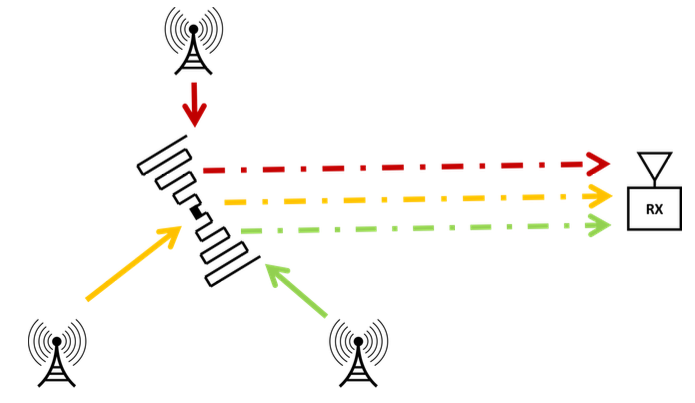
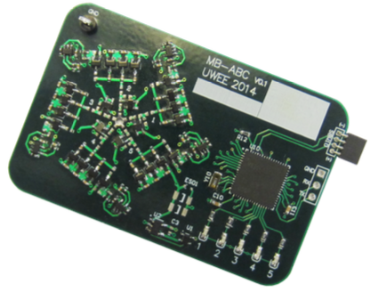

Hi
I'm an electrical engineer and co-founder of WaveWorks, where we make chips that let wireless devices move more data for less power. Previously I co-invented Ambient Backscatter, pioneered techniques around ambient RF energy harvesting, and developed battery-free sense & edge compute systems. I'm based in Seattle, Washington.
Please don't hesitate to contact me at: aaronparks@ieee.org
WHAT I'M DOING
WaveWorks is bringing a radically different type of wireless connectivity solution into the mainstream. Standard-protocol backscatter comms is cheaper, lower power, and can even enable battery-free networking. I'm a co-founder and CEO of WaveWorks.
WHAT I DID
AMBIENT BACKSCATTER
In graduate school, I co-invented and developed technologies to allow devices to talk by reflecting ambient radio signals. This is maybe the latest incarnation of Harry Stockman's 1948 dream of using reflections to communicate. Learn more in my PhD thesis.
WISP

The WISP is an open-source, software-defined RFID tag built around a low-power MSP430 microcontroller. It's powered wirelessly, and so doesn't have or need a battery. The WISP is a long-running project of my PhD advisor, Prof. Joshua Smith, and I was lucky enough to be involved in the development and promotion of the WISP 5.
AMBIENT RF ENERGY HARVESTING
The built environment is full of radio frequency energy from sources such as cell towers, broadcast television transmitters, and WiFi access points. I've helped to create new systems for efficiently harvesting and combining the ambient energy from all these sources.
PUBLICATIONS
Take a look at my Google Scholar page for a full list.